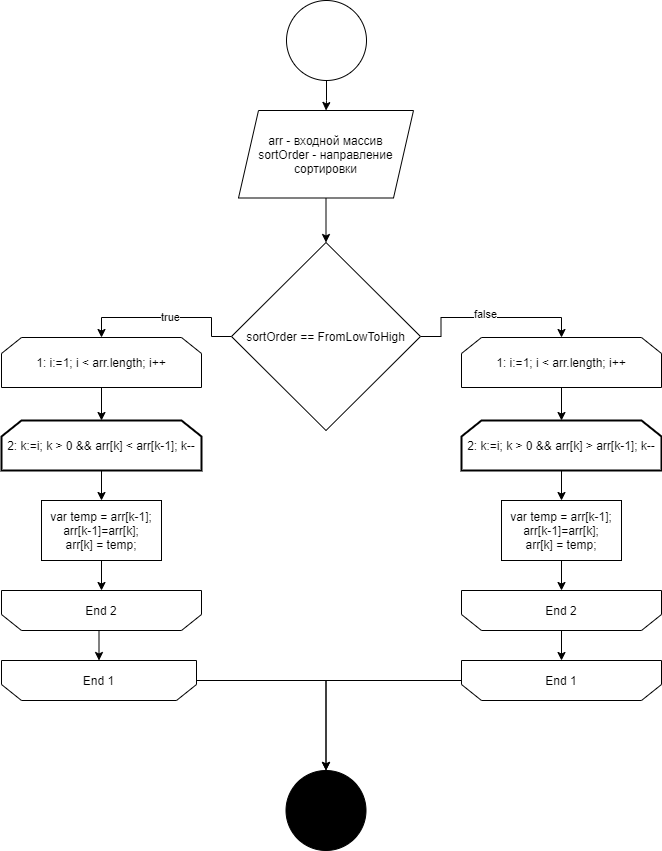

Набор олгоритмов
Данная статья посвящена менее распространённым алгоритмам сортировки. Контретно Сортировке вставкой (Insertion), Сортировке Дональда Шелла (Shell), Сортировке слиянием (Merge), Кучной сортировке (Heap).

Алгоритмы - Алгоритмы сортировки #5, Другие алгоритмы сортировки
1. Сортировка вставкой (Insertion)
1.1. Первое объяснение
Алгоритм сортировки от меньшего к большему:
for i = 2:n,
for (k = i; k > 1 and a[k] < a[k-1]; k--)
Поменять местами a[k,k-1]
// Подмассив a[1..i] уже отсортирован
end
Алгоритм сортировки от большего к меньшему:
for i = 2:n,
for (k = i; k > 1 and a[k] > a[k-1]; k--)
Поменять местами a[k,k-1]
// Подмассив a[1..i] уже отсортирован
end
1.2. Второе объяснение
Дадим блок-схему сортировки вставкой в обоих направлениях (от большего к меньшему, от меньшего к большему):

Рис. 1. Блок-схема сортировки вставкой (Insertion).
1.3. Третье объяснение
1.3.1. Общий код для тестирования и работы сортировок
1.3.1.1. Работа сортировок
Рассмотрим вспомогатальный код для работы сортировок:
var Sorter = {
SortDirection : {
FromLowToHigh: -1,
FromHighToLow: 1
}
};
Код 1.3.1.1. Исходный код файла "sorter-enum.js".
Зачем нужна эта переменная?
Поле Sorter.SortDirection.FromHighToLow означает направление сортировки от большего к меньшему.
Поле Sorter.SortDirection.FromLowToHigh означает направление сортировки от меньшего к большему.
Рассмотрим вспомогатальный код для тестирования сортировок:
1.3.1.2. Класс для тестирования сортировок
var SortingTest = {
newArray: function(length, order) {
var result = [];
if(Sorter.SortDirection.FromLowToHigh == order) {
for(var i = 0; i < length; i++) {
result.push(i);
}
}
else {
for(var i = length - 1; i >= 0; i--) {
result.push(i);
}
}
return result;
},
arrayToString: function (arr) {
result = "[";
for(var i = 0; i < arr.length; i++) {
result += arr[i];
if(i < (arr.length - 1)) {
result += ", ";
}
}
result += "]";
return result;
},
testArray: function(arr, order) {
var result = true;
for(var i = 0; (i < (arr.length - 2)) && result; i++) {
if(order) {
if(arr[i] > arr[i+1]) {
result = false;
}
}
else {
if(arr[i] < arr[i+1]) {
result = false;
}
}
}
return result;
}
};
Код 1.3.1.2. Исходный код файла "test-other-sorting.js".
Рассмотрим его:
- newArray: function(length, order) — функция для генерации нового массива. length — длина генерируемого массива; order — порядок сортировки (по возрастанию или по убыванию), элементы поочерёдно возрастают или убывают.
- arrayToString: function (arr) — функция совмещает JavaScript массив в строку.
- testArray: function(arr, order) — тестирует массив arr на соответствие всех элементов определённому порядку сортировки order.
1.3.2. Код Сортировки вставкой (Insertion).
Код класса сортировки:
function InsertionSorter(array, sortOrder, callback) {
var self = this;
self._private = {
array: array,
sortOrder: sortOrder,
callback: callback
};
self.sort = function () {
var arr = self._private.array;
if(sortOrder === Sorter.SortDirection.FromLowToHigh) {
for(var i = 1; i < arr.length; i++) {
for(var k = i; k > 0 && arr[k] < arr[k-1]; k--) {
var temp = arr[k-1];
arr[k-1] = arr[k];
arr[k] = temp;
}
}
}
else {
for(var i = 1; i < arr.length; i++) {
for(var k = i; k > 0 && arr[k] > arr[k-1]; k--) {
var temp = arr[k-1];
arr[k-1] = arr[k];
arr[k] = temp;
}
}
}
self._private.callback();
};
self.getArray = function () {
return self._private.array;
};
}
Код 1.3.2.1. Исходный код файла "insertion-sorter.js".
2. Сортировка Дональда Шелла (Shell)
2.1. Первое объяснение
Согласно Википедии: Сортировка Шелла (англ. Shell sort) — алгоритм сортировки, являющийся усовершенствованным вариантом сортировки вставками. Идея метода Шелла состоит в сравнении элементов, стоящих не только рядом, но и на определённом расстоянии друг от друга. Иными словами — это сортировка вставками с предварительными «грубыми» проходами.
Алгоритм сортировки:
h = 1
while h < n, h = 3*h + 1
while h > 0,
h = h / 3
for k = 1:h, сортировка вставкой(insertion sort) a[k:h:n]
end
2.2. Второе объяснение
Дадим блок-схему сортировки Дональда Шелла в обоих направлениях (от большего к меньшему, от меньшего к большему):

Рис. 2. Блок-схема сортировки Дональда Шелла (Shell).
2.3. Третье объяснение
2.3.1. Код Сортировки Дональда Шелла (Shell)
Код класса сортировки:
function ShellSorter(array, sortOrder, callback) {
var self = this;
self._private = {
array: array,
sortOrder: sortOrder,
callback: callback
};
self.sort = function () {
var arr = self._private.array;
if(sortOrder === Sorter.SortDirection.FromLowToHigh) {
var increment = arr.length / 2;
while (increment > 0) {
for (var i = increment; i < arr.length; i++) {
var j = i;
var temp = arr[i];
while (j >= increment && arr[j-increment] > temp) {
arr[j] = arr[j-increment];
j = j - increment;
}
arr[j] = temp;
}
if (increment == 2) {
increment = 1;
} else {
increment = parseInt(increment*5 / 11);
}
}
}
else {
var increment = arr.length / 2;
while (increment > 0) {
for (var i = increment; i < arr.length; i++) {
var j = i;
var temp = arr[i];
while (j >= increment && arr[j-increment] < temp) {
arr[j] = arr[j-increment];
j = j - increment;
}
arr[j] = temp;
}
if (increment == 2) {
increment = 1;
} else {
increment = parseInt(increment*5 / 11);
}
}
}
self._private.callback();
};
self.getArray = function () {
return self._private.array;
};
}
Код 2.3.1.1. Исходный код файла "shell-sorter.js".
3. Сортировка слиянием (Merge)
3.1. Первое объяснение
Алгоритм сортировки:
# разделение пополам
m = n / 2
# рекурсивная сортировка
sort a[1..m]
sort a[m+1..n]
# слияние отсортированных массивов используя временный массив
b = делаем копию подмассива a[1..m]
i = 1, j = m+1, k = 1
while i <= m and j <= n,
a[k++] = (a[j] < b[i]) ? a[j++] : b[i++]
while i <= m,
a[k++] = b[i++]
Направление сортировки в алгоритме определите самостоятельно при его реализации.
3.2. Второе объяснение
Дадим блок-схему сортировки слиянием (Merge) в обоих направлениях (от большего к меньшему, от меньшего к большему):

Рис. 3. Блок-схема сортировки слиянием (Merge).
3.3. Третье объяснение
3.3.1. Код Сортировки слиянием (Merge)
Код класса сортировки:
function MergeSorter(array, sortOrder, callback) {
var self = this;
self._private = {
array: array,
sortOrder: sortOrder,
callback: callback
};
var _mergeArrays = function (left, right) {
var arr = [];
if(sortOrder === Sorter.SortDirection.FromLowToHigh) {
while (left.length && right.length) {
if (left[0] < right[0]) {
arr.push(left.shift());
} else {
arr.push(right.shift());
}
}
var result = [];
for(var i = 0; i < arr.length; i++)
result.push(arr[i]);
for(var i = 0; i < left.length; i++)
result.push(left[i]);
for(var i = 0; i < right.length; i++)
result.push(right[i]);
return result;
}
else {
while (left.length && right.length) {
if (left[0] > right[0]) {
arr.push(left.shift());
} else {
arr.push(right.shift());
}
}
var result = [];
for(var i = 0; i < arr.length; i++)
result.push(arr[i]);
for(var i = 0; i < left.length; i++)
result.push(left[i]);
for(var i = 0; i < right.length; i++)
result.push(right[i]);
return result;
}
}
var mergeSort = function (array) {
var half = array.length / 2;
if(array.length < 2) {
return array;
}
var left = array.splice(0, half);
return _mergeArrays(mergeSort(left),mergeSort(array));
}
self.sort = function () {
self._private.array = mergeSort(self._private.array);
self._private.callback();
};
self.getArray = function () {
return self._private.array;
};
}
Код 3.3.1.1. Исходный код файла "merge-sorter.js".
4. Кучная сортировка (Heap)
4.1. Первое объяснение
Алгоритм сортировки:
# нагружаем
for i = n/2:1, sink(a,i,n)
# сортировка
for i = 1:n,
swap a[1,n-i+1]
sink(a,1,n-i)
end
# тонем в i in a[1..n]
function sink(a,i,n):
# {lc,rc,mc} = {left,right,max} child index
lc = 2*i
if lc > n, return # нет потомков
rc = lc + 1
mc = (rc > n) ? lc : (a[lc] > a[rc]) ? lc : rc
if a[i] >= a[mc], return # куча в порядке
swap a[i,mc]
sink(a,mc,n)
Направление сортировки в алгоритме определите самостоятельно при его реализации.
4.2. Второе объяснение
Дадим блок-схему кучной сортировки (Heap) в обоих направлениях (от большего к меньшему, от меньшего к большему):

Рис. 4. Блок-схема кучной сортировки (Heap).
4.3. Третье объяснение
4.3.1. Код Кучной сортировки (Heap)
Код класса сортировки, он оптимизирован для JavaScript:
function HeapSorter(array, sortOrder, callback) {
var self = this;
self._private = {
array: array,
sortOrder: sortOrder,
callback: callback
};
var array_length = array.length;
var heap = function (input, i) {
var left = 2 * i + 1;
var right = 2 * i + 2;
var max = i;
if(sortOrder === Sorter.SortDirection.FromLowToHigh) {
if (left < array_length && input[left] > input[max]) {
max = left;
}
if (right < array_length && input[right] > input[max]) {
max = right;
}
if (max != i) {
swap(input, i, max);
heap(input, max);
}
}
else {
if (left < array_length && input[left] < input[max]) {
max = left;
}
if (right < array_length && input[right] < input[max]) {
max = right;
}
if (max != i) {
swap(input, max, i);
heap(input, max);
}
}
}
var swap = function (input, index_A, index_B) {
var temp = input[index_A];
input[index_A] = input[index_B];
input[index_B] = temp;
}
var heapSort = function (input) {
var array_length = input.length;
for (var i = Math.floor(array_length / 2); i >= 0; i -= 1) {
heap(input, i);
}
for (var i = input.length - 1; i > 0; i--) {
swap(input, 0, i);
array_length--;
heap(input, 0);
}
}
self.sort = function () {
heapSort(array);
self._private.callback();
};
self.getArray = function () {
return self._private.array;
};
}
Код 4.3.1.1. Исходный код файла "heap-sorter.js".
5. Пример вызова всех сортировок
Приведу пример вызова каждого типа сортировки, описанного выше, ввиде кода html-страницы со встроенным кодом JavaScript (JavaScript использует файлы описанные выше):
<!DOCTYPE html>
<html>
<head>
<title>Алгоритмы - Алгоритмы сортировки #5, Другие алгоритмы сортировки</title>
<link rel="stylesheet" type="text/css" href="../../../css/main.css">
<script src="js/sorter-enum.js"></script>
<script src="js/test-other-sorting.js"></script>
<script src="js/insertion-sorter.js"></script>
<script src="js/shell-sorter.js"></script>
<script src="js/merge-sorter.js"></script>
<script src="js/heap-sorter.js"></script>
</head>
<body>
<h1>Тестирование сортировок #5</h1>
<h2>Сортировка вставкой (Insertion)</h2>
<p><b>Начальный массив:</b></p>
<div class="commands">
<script>
document.write(SortingTest.arrayToString(SortingTest.newArray(11, Sorter.SortDirection.FromLowToHigh)));
</script>
</div>
<p><b>Конечный массив:</b></p>
<div class="commands" id="js-output-insertion">
<script>
var arr = new InsertionSorter(
SortingTest.newArray(11, Sorter.SortDirection.FromLowToHigh), Sorter.SortDirection.FromHighToLow,
function () {
document.getElementById('js-output-insertion').innerHTML += SortingTest.arrayToString(arr.getArray());
}
);
arr.sort();
</script>
</div>
<h2>Сортировка Дональда Шелла (Shell)</h2>
<p><b>Начальный массив:</b></p>
<div class="commands">
<script>
document.write(SortingTest.arrayToString(SortingTest.newArray(11, Sorter.SortDirection.FromLowToHigh)));
</script>
</div>
<p><b>Конечный массив:</b></p>
<div class="commands" id="js-output-shell">
<script>
var arr = new ShellSorter(
SortingTest.newArray(11, Sorter.SortDirection.FromLowToHigh), Sorter.SortDirection.FromHighToLow,
function () {
document.getElementById('js-output-shell').innerHTML += SortingTest.arrayToString(arr.getArray());
}
);
arr.sort();
</script>
</div>
<h2>Сортировка слиянием (Merge)</h2>
<p><b>Начальный массив:</b></p>
<div class="commands">
<script>
document.write(SortingTest.arrayToString(SortingTest.newArray(11, Sorter.SortDirection.FromLowToHigh)));
</script>
</div>
<p><b>Конечный массив:</b></p>
<div class="commands" id="js-output-merge">
<script>
var arr = new MergeSorter(
SortingTest.newArray(11, Sorter.SortDirection.FromLowToHigh), Sorter.SortDirection.FromHighToLow,
function () {
document.getElementById('js-output-merge').innerHTML += SortingTest.arrayToString(arr.getArray());
}
);
arr.sort();
</script>
</div>
<h2>Кучная сортировка (Heap)</h2>
<p><b>Начальный массив:</b></p>
<div class="commands">
<script>
document.write(SortingTest.arrayToString(SortingTest.newArray(11, Sorter.SortDirection.FromLowToHigh)));
</script>
</div>
<p><b>Конечный массив:</b></p>
<div class="commands" id="js-output-heap">
<script>
var arr = new HeapSorter(
SortingTest.newArray(11, Sorter.SortDirection.FromLowToHigh), Sorter.SortDirection.FromHighToLow,
function () {
document.getElementById('js-output-heap').innerHTML += SortingTest.arrayToString(arr.getArray());
}
);
arr.sort();
</script>
</div>
</body>
</html>
6. Заключение
Попробуйте реализовать алгоритмы сортировки на любимом Вам языке программирования, пользуясь только описанием алгоритма, а не его реализацией на JavaScript, в прямом и обратном направлениях.